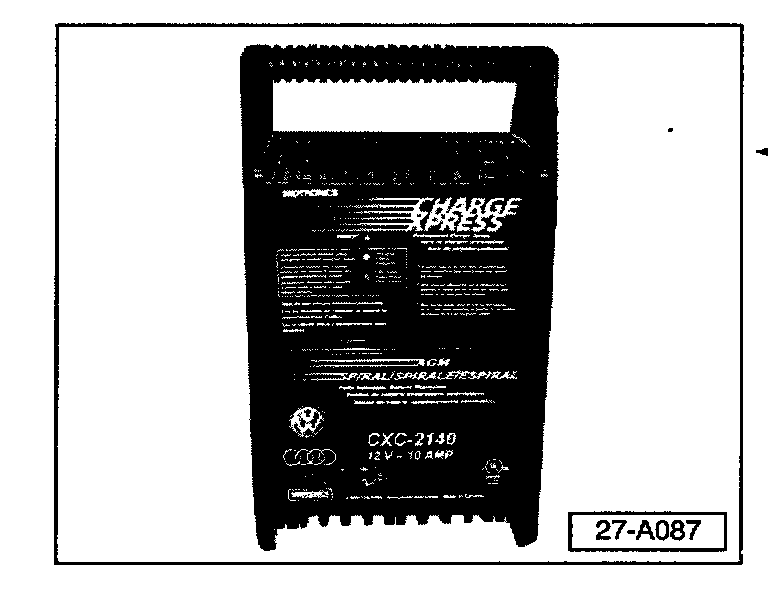
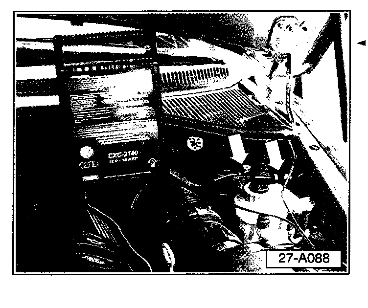

Battery - Maintaining Charge During Repairs
Group: 27Number: 03-03
Date: July 10, 2003
Subject:
Battery, Maintaining Charge During Repairs
Model(s):
Touareg 2004
Supersedes T.B. Repair Group 27 number 03-01 dated June 20, 2003
Condition
Rapid battery discharge occurs while repairing vehicle with ignition switched ON.
Occurs due to high current draw of headlights and load from other vehicle systems with ignition switched in the ON position (vehicle not running).
Battery discharge can also occur with ignition OFF and hood open.
Service

Any repair or diagnostic work must be done with a fully charged battery. For routine PDI or diagnostic checks with VAS 5051/5052 the battery maintainer CXC 2140 must be connected to the battery posts in the engine compartment. Headlamp fuses 35 (LH) and 17 (RH) should be removed to reduce battery discharge (This will introduce system faults that must be erased at conclusion of the repair).
For more extensive system checks that consume more power, such as seat heaters, etc, the Midtronics 940 inCharger should be connected and operated in the MANUAL mode to maintain sufficient battery charge.
The CXC 2140:
^ Is a 12 Volt, 10 Amp, fully automatic battery charger and can be used for multiple vehicle types.
^ Will provide 10 amps to the system and will maintain charge with headlights ON.
^ Charging stops when complete so damage from overcharge will not occur.
^ LED state of charge indicator indicates when charge is complete.
^ Portable design makes it easy to take charger to the vehicle.
^ Is Safe to use, charger will not charge if connected incorrectly.

^ Connect charger to appropriate terminals in engine compartment (shown).